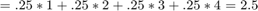
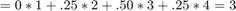
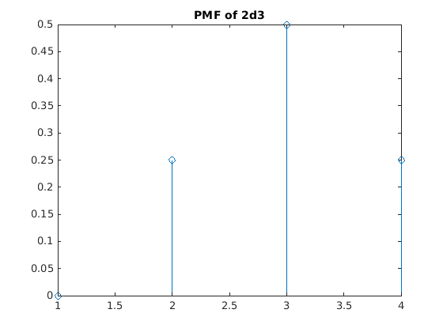
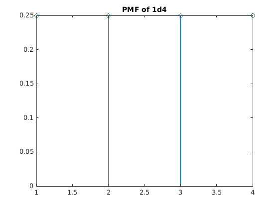
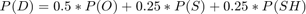

Contents
EpicQUESTion 2
M = 10;
M = 1e6; % number of experiments to perform
Part A
Average troll health 
hp = randi(4,M,1); % set of 1d4 hp_ave = mean(hp); % average troll health fprintf("Average troll health: %f\n", hp_ave);
Average troll health: 2.499487
Average fireball damage 
f = randi(2,M,2); % set of 2d2 f_dmg = sum(f,2); % compute damage f_ave = mean(f_dmg); % average fireball damage f_3 = sum(f_dmg>3)/M; % probability damage > 3 fprintf("Average fireball damage: %f\n", f_ave); fprintf("Probability fireball >3: %f\n", f_3);
Average fireball damage: 2.999823 Probability fireball >3: 0.250134
Part B
F = event of fireball damage T1, T2 = event of troll hp
pmf_F = [0; 0.25; 0.5; 0.25]; pmf_T = ones(4, 1).*0.25; figure; stem(pmf_F); title("PMF of 2d3"); figure; stem(pmf_T); title("PMF of 1d4"); 
Part C
hp = randi(4,M,2); % make M banks of 2 trolls f = randi(2,M,2); % throw 2 die for each spell f_dmg = sum(f,2); % compute fireball damage hp_new = hp - f_dmg; % attack troll kia = hp_new <= 0; % see if dead dead = sum(kia,2); % count the dead fprintf("Probability of 2 kill: %f\n", sum(dead == 2)/M);
Probability of 2 kill: 0.593951
Part C Theoretical
theoretical_dead = 0; prob_space = [1,2,3,4]; %for loop for each troll, iterating through combinations %using conditional probability aptly for each case %e.g. set of troll hp of [1,1] is killed, at the very least when fireball %>=1, such that p(fireball>=1|[1,1]) = 1*(1/4)^2 for i = prob_space for j = prob_space if i ==4 || j ==4 theoretical_dead = theoretical_dead+(1/4)^3; elseif i == 3 || j==3 theoretical_dead = theoretical_dead + (3/4)*(1/4)^2; elseif i==2 || j ==2 theoretical_dead = theoretical_dead + (1/4)^2; else theoretical_dead = theoretical_dead + (1/4)^2; end end end fprintf("Theoretical probability of 2 kill: %f\n", theoretical_dead);
Theoretical probability of 2 kill: 0.593750
Part D
Each troll killed independently, troll must have health of at least 3 otherwise any fireball will kill. Fireball must do less than 3 damage otherwise it will kill any troll.
kia(dead~=1,:)=1; % find lone survivors survivor_hp = hp_new(~kia); % check their health fprintf("Mean survivor health: %f\n", mean(survivor_hp));
Mean survivor health: 1.200869
Part D Theoretical
R = event of the remaining hp of one troll given that exactly one troll is dead, 0 otherwise
k = event that exactly one troll is dead
E(P(R given k)) = sum(r * P(R=r given k)) = sum(r * P(R=r and k)/P(k))
joint_pmf_TF = pmf_T*pmf_T'; joint_pmf_TF = reshape(joint_pmf_TF(:)*pmf_F', 4, 4, 4); [T1, T2, F] = ndgrid(1:4); R = (F >= T1 & F < T2).*(T2 - F) + ... (F >= T2 & F < T1).*(T1 - F); p_2d = 0; for r=1:2 p_2d = p_2d + r*sum(joint_pmf_TF(R == r)); end p_2d = p_2d/sum(joint_pmf_TF(R > 0)); fprintf("Theoretical mean survivor health: %f\n", p_2d);
Theoretical mean survivor health: 1.200000
Part E
50% chance of hitting with sword, 50% change of hitting with hammer given sword hit I didn't compute the damage probabilities
roll_sword = randi([0,1],M,1); % generate sword hits sword_dmg = sum(randi(6,M,2),2); % generate sword damage roll_hammer = randi([0,1],M,1); % generate potential hammer hits hammer_dmg = randi(4,M,1); % generate pontential hammer damage % conditional probability achieved by requiring sword and hammer to be true dmg = roll_sword.*sword_dmg + roll_sword.*roll_hammer.*hammer_dmg; fprintf("Mean Shitvam damage: %f\n", mean(dmg));
Mean Shitvam damage: 4.124173
Part E Theoretical
X = dice roll, S = sword damage, H = hammer damage, SH = sword and hammer damage, O = 0 damage, D = total damage,

note that prob of 0 damage is not counted in expectation
joint_pmf_X = ones(6, 6).*(1/6^2); [X1, X2] = meshgrid(1:6); S = X1 + X2; pmf_S = zeros(16, 1); for s=2:12 pmf_S(s) = sum(joint_pmf_X(S == s)); end pmf_H = zeros(16, 1); pmf_H(1:4) = 1/4; joint_pmf_SH = pmf_S*pmf_H'; [S, H] = meshgrid(1:16); SH = S + H; pmf_SH = zeros(16, 1); for sh=2:16 pmf_SH(sh) = sum(joint_pmf_SH(SH == sh)); end pmf_D = 0.25.*pmf_S + 0.25.*pmf_SH; p_2e = sum((1:16).*pmf_D'); fprintf("Theoretical Mean Shitvam damage: %f\n", p_2e);
Theoretical Mean Shitvam damage: 4.125000